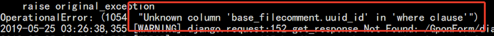

Upgrade to Pro 7.0¶
Since seafile-pro 7.0.0, we have upgraded Elasticsearch to 5.6. As Elasticsearch 5.6 relies on the Java 8 environment and can't run with root, you need to run Seafile with a non-root user and upgrade the Java version.
Upgrade the Java version¶
In order to upgrade from 6.3.x to 7.0.x, you may need to upgrade the JDK version.
Run the following command to view the current Java version information:
java -version
If the current JDK version is 1.7.0, then you need to upgrade to 1.8.0. To upgrade to openjdk-1.8.0, refer to the following command:
# For CentOS
yum install java-1.8.0-openjdk
# For Ubuntu
apt-get install openjdk-8-jre
In addition, if you previously ran Seafile with root, you would need to run Seafile with a non-root user in order to use search functionality after upgrading to 7.0.x. If Seafile is already running with a non-root user, you can do the upgrade directly.
Switch user if you are using root to run Seafile¶
It is recommended that you run Seafile with the seafile user. For specific operations, please refer to the following process:
Assume that the Seafile installation directory is: /opt/seafile
Assume that the Seafile data storage path is: /opt/seafile/seafile-data
Stop Seafile Service¶
You need to stop the currently running seafile process first.
cd /opt/seafile/seafile-server-latest
./seafile.sh stop
./seahub.sh stop
Create seafile user¶
Create a system account to run the Seafile service. The suggested user name is seafile：
useradd --system --comment "seafile" seafile --create-home --home-dir /home/seafile
Modify directory permissions¶
Modify the owner and group of the Seafile installation directory and the Seafile data storage directory to seafile:
chown -R seafile.seafile /opt/seafile
chown -R seafile.seafile /opt/seafile/seafile-data
chown -R seafile.seafile /tmp/seafile-office-output
Start the service¶
su - seafile
cd /opt/seafile/seafile-server-latest
./seafile.sh start
./seahub.sh start
Modify the startup scripts¶
If you used the systemd manager to implement boot-up：
- You need to modify
/etc/systemd/system/seafile.service：
[Unit]
Description=Seafile Server
After=network.target mariadb.service
[Service]
ExecStart=/opt/seafile/seafile-server-latest/seafile.sh start
ExecStop=/opt/seafile/seafile-server-latest/seafile.sh stop
User=seafile
Group=seafile
Type=oneshot
RemainAfterExit=yes
[Install]
WantedBy=multi-user.target
And /etc/systemd/system/seahub.service：
[Unit]
Description=Seafile Seahub
After=network.target seafile.service
[Service]
ExecStart=/opt/seafile/seafile-server-latest/seahub.sh start
ExecStop=/opt/seafile/seafile-server-latest/seahub.sh stop
User=seafile
Group=seafile
Type=oneshot
RemainAfterExit=yes
[Install]
WantedBy=multi-user.target
Reload the systemd manager configuration：
systemctl daemon-reload
If you used the init script to implement boot-up:
You need to modify /etc/init.d/seafile-server：
1 2 3 4 5 6 7 8 9 10 11 12 13 14 15 16 17 18 19 20 21 22 23 24 25 26 27 28 29 30 31 32 33 34 35 36 37 38 | |
Upgrade Seafile¶
Stop running the current seafile service：
su - seafile
cd /opt/seafile/seafile-server-latest
./seafile.sh stop
./seahub.sh stop
Download the seafile-pro 7.0.x package and extract it to the Seafile installation directory /opt/seafile; then execute the upgrade script:
cd /opt/seafile/seafile-pro-server-7.0.x/upgrade/
./upgrade_6.3_7.0.sh
After the upgrade script is successfully executed, start the Seafile service:
cd /opt/seafile/seafile-server-latest
./seafile.sh start
./seahub.sh start
Features Modification¶
Encrypted libraries¶
Note, to enable using new encrypted libraries with different salt for different libraries, you need to add the following configuration to seahub_setting.py
ENCRYPTED_LIBRARY_VERSION = 3
Currently the mobile clients and desktop clients does not supported new version of encrypted library yet. After we upgrade the clients, we will make the setting as default.
File history¶
Recording file history to database for fast access is enabled by default for 'Markdown, .txt, ppt, pptx, doc, docx, xls, xlsx'. To disable the feature or to modified the file list, you can add the following settings to seafevents.conf
[FILE HISTORY]
enabled = false
suffix = md,txt,...
After enable the feature, the old histories version for markdown, doc, docx files will not be list in the history page. (Only new histories that stored in database will be listed) But the users can still access the old versions in the library snapshots.
For file types not listed in the suffix , histories version will be scanned from the library history as before.
File activities¶
The file activities feature are redesigned. We use a new database table to record file activities. The old activities will not be displayed.
Wikis¶
In version 6.3, users can create public or private Wikis. In version 7.0, private Wikis is replaced by column mode view. Every library has a column mode view. So users don't need to explicitly create private Wikis.
Public Wikis are now renamed to published libraries.
There are two role permissions that control whether a user can create public Wikis, share link permission and publish library permission. A user must have both the permissions to be able to use public Wikis.
Common Problems¶
Not able to open Markdown file¶
If after upgrading to 7.0, you are not able to open Markdown file and if your seahub.log containing the following error, it is caused by you forgot to migrate file comment when you upgrade to 6.3 version.


You can delete the table base_filecomment and recreate the table.
CREATE TABLE `base_filecomment` (
`id` int(11) NOT NULL AUTO_INCREMENT,
`author` varchar(255) NOT NULL,
`comment` longtext NOT NULL,
`created_at` datetime NOT NULL,
`updated_at` datetime NOT NULL,
`uuid_id` char(32) NOT NULL,
`detail` longtext NOT NULL,
`resolved` tinyint(1) NOT NULL,
PRIMARY KEY (`id`),
KEY `base_filecomment_uuid_id_4f9a2ca2_fk_tags_fileuuidmap_uuid` (`uuid_id`),
KEY `base_filecomment_author_8a4d7e91` (`author`),
KEY `base_filecomment_resolved_e0717eca` (`resolved`),
CONSTRAINT `base_filecomment_uuid_id_4f9a2ca2_fk_tags_fileuuidmap_uuid` FOREIGN KEY (`uuid_id`) REFERENCES `tags_fileuuidmap` (`uuid`)
) ENGINE=InnoDB DEFAULT CHARSET=utf8;